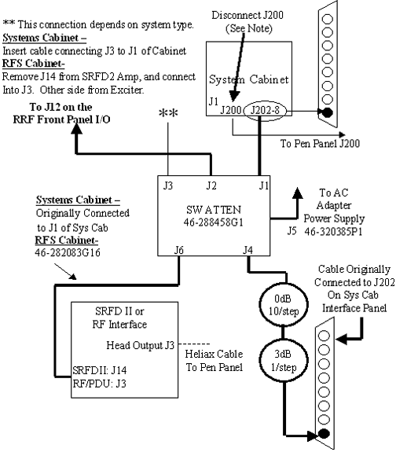

Illustration 10: Magnet Room Setup for Head Sense Loopback Test

| NOTE: | Illustration 10 shows the old head coil. Setup is the same for the new Split Top Head Coil. |
Illustration 9: Equipment Room Head Sense Loop Setup

| NOTE: | For 1.5T, be certain to disconnect the cable to J200 from the SYS CAB I/F as shown in Illustration 9. Failure to disconnect the cable at J200 may result in RF Linearity failures only in head mode. |
Illustration 10: Magnet Room Setup for Head Sense Loopback Test